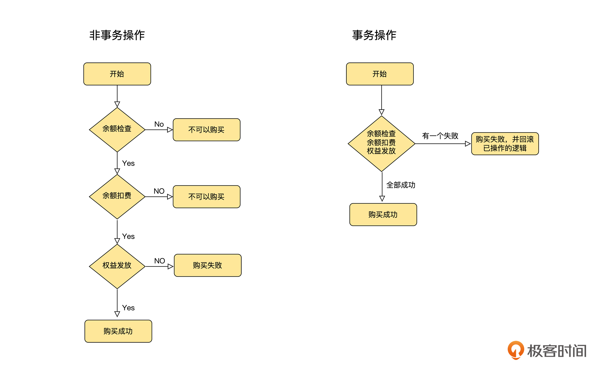
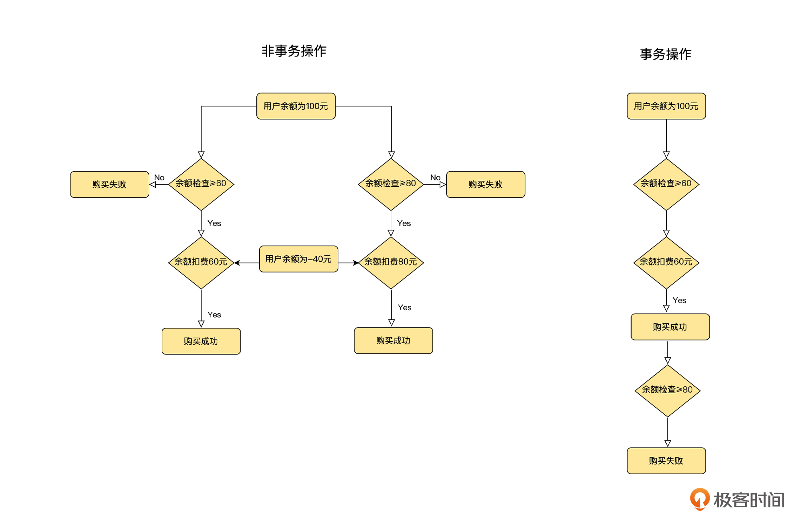
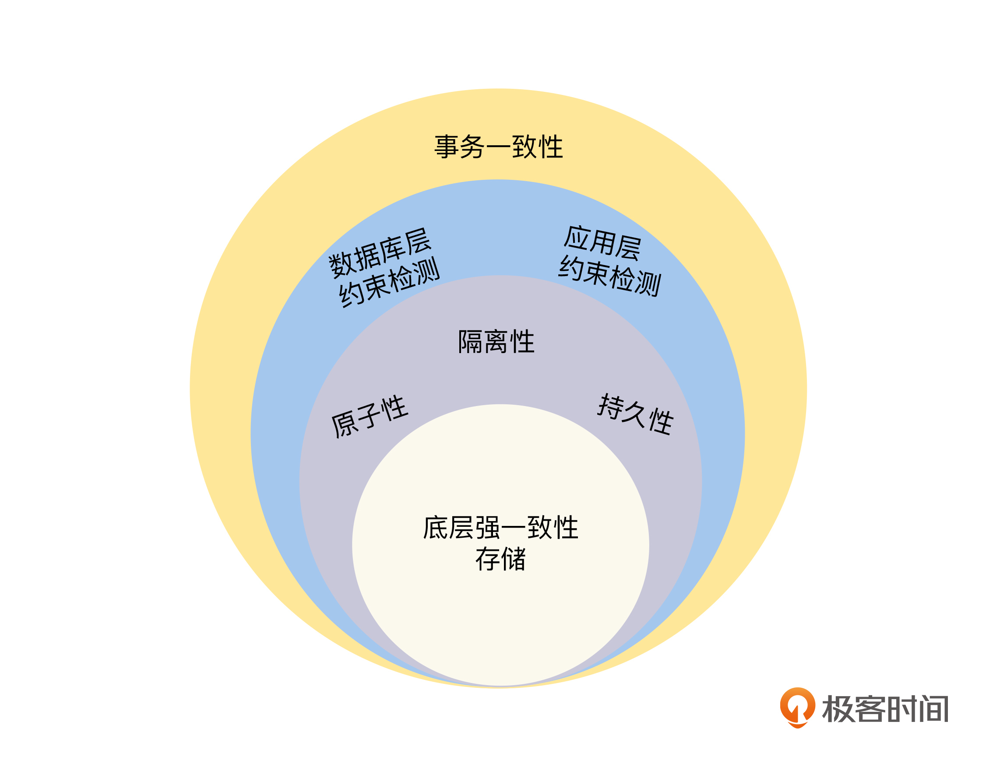

- 00 开篇词 掌握好学习路径，分布式系统原来如此简单.md.html
- 01 导读：以前因后果为脉络，串起网状知识体系.md.html
- 02 新的挑战：分布式系统是银弹吗？我看未必！.md.html
- 03 CAP 理论：分布式场景下我们真的只能三选二吗？.md.html
- 04 注册发现： AP 系统和 CP 系统哪个更合适？.md.html
- 05 负载均衡：从状态的角度重新思考负载均衡.md.html
- 06 配置中心：如何确保配置的强一致性呢？.md.html
- 07 分布式锁：所有的分布式锁都是错误的？.md.html
- 08 重试幂等：让程序 Exactly-once 很难吗？.md.html
- 09 雪崩（一）：熔断，让故障自适应地恢复.md.html
- 10 雪崩（二）：限流，抛弃超过设计容量的请求.md.html
- 11 雪崩（三）：降级，无奈的丢车保帅之举.md.html
- 12 雪崩（四）：扩容，没有用钱解决不了的问题.md.html
- 13 可观测性（一）：如何监控一个复杂的分布式系统？.md.html
- 14 可观测性（二）：如何设计一个高效的告警系统？.md.html
- 15 故障（一）：预案管理竟然能让被动故障自动恢复？.md.html
- 16 故障（二）：变更管理，解决主动故障的高效思维方式.md.html
- 17 分片（一）：如何选择最适合的水平分片方式？.md.html
- 18 分片（二）：垂直分片和混合分片的 trade-off.md.html
- 19 复制（一）：主从复制从副本的数据可以读吗？.md.html
- 20 复制（二）：多主复制的多主副本同时修改了怎么办？.md.html
- 21 复制（三）：最早的数据复制方式竟然是无主复制？.md.html
- 22 事务（一）：一致性，事务的集大成者.md.html
- 23 事务（二）：原子性，对应用层提供的完美抽象.md.html
- 24 事务（三）：隔离性，正确与性能之间权衡的艺术.md.html
- 25 事务（四）：持久性，吃一碗粉就付一碗粉的钱.md.html
- 26 一致性与共识（一）：数据一致性都有哪些级别？.md.html
- 27 一致性与共识（二）：它们是鸡生蛋还是蛋生鸡？.md.html
- 28 一致性与共识（三）：共识与事务之间道不明的关系.md.html
- 29 分布式计算技术的发展史：从单进程服务到 Service Mesh.md.html
- 30 分布式存储技术的发展史：从 ACID 到 NewSQL.md.html
- 春节加餐 技术债如房贷，是否借贷怎样取舍？.md.html
- 春节加餐 深入聊一聊计算机系统的时间.md.html
- 春节加餐 系统性思维，高效学习和工作的利器.md.html
- 结束语 在分布式技术的大潮流中自由冲浪吧！.md.html
- 捐赠
22 事务（一）：一致性，事务的集大成者
你好，我是陈现麟。
通过学习“数据复制”系列的内容，我们使用数据复制，将同一份数据按一定的策略复制到多台机器上，解决了存储服务由于宕机等故障，不能为用户提供服务和数据丢失的问题，恭喜你又攻克了一个难关。
但是，由于极客时间用户量增多，每一天课程购买的订单数都在急剧增加，你开始接到用户这样的投诉，他在购买课程时出现了错误，课程没有购买成功，但是余额却被扣了。同时，财务的同事也开始向你反馈，他们在算账时，发现收入和支出的数目对不上。在遇到这样的问题时，你是不是一时抓不到头绪呢？其实这些都是我们工作中经常碰到的事务场景问题。
那么从这节课开始，我们将一起花四节课的时间来解决分布式场景下的事务问题。这一节课，我们先通过分析业务场景来讨论事务是什么，以及它可以解决的问题，然后学习它的四个特性：一致性、原子性、隔离性和持久性，最后再一起来讨论如何实现事务的一致性。
事务是什么
在本课开头，我们列举了工作中经常碰到的两个事务场景问题，那么我们先来了解一下事务是什么？事务可以看成是一个或者多个操作的组合操作，并且它对这个组合操作提供一个保证，如果这个组合操作之前的数据是一致的（即正确的），那么操作之后的数据也应该是一致的。不论这个组合操作执行的过程中，是否发生系统故障，还是在这个组合操作执行的过程中，是否与其他事务一起执行。
为了让你更好地理解事务的定义，我们结合开头提到的两个具体的事务场景问题来讨论一下。
第一个问题，用户在极客时间购买课程时出现了错误，课程没有购买成功，但是余额却被扣了。这里我们先分析一下，用户在购买课程时，在我们的服务器程序里，需要实现三个操作：
- 余额检查：确认用户的余额是否大于课程的价格，如果余额足够，则可以购买，否则不可以购买。
- 余额扣费：从用户的余额中扣除购买课程的金额。
- 权益发放：给用户发放购买课程的学习权益。
正常情况下，上述三个操作完成后，用户的余额被扣除，也获得了学习权益。但是如果在这三个操作执行的过程中，出现了发放学习权益的服务崩溃或者课程下线等情况，那么这三个操作就无法全部执行成功。此时，用户的余额已经被扣除，但是在 App 上却收到了购买失败的提示，用户一定是不认可的。
我们仔细分析就会发现，这个问题的根本原因是余额扣费和权益发放不是一个整体操作，出现了部分执行成功的情况。这里可以结合事务来思考，如果将课程购买通过一个事务来执行的话，这个事务就会包括余额检查、余额扣费和权益发放 3 个操作，并且它对这个组合操作提供了一个保证，保证不论出现什么故障，这 3 个操作要么都执行成功，要么都不执行。所以当我们结合事务来思考，如下图所示，这个问题就迎刃而解了。

第二个问题，财务的同事反馈他们在算账时，发现收入和支出的数目对不上。这里我们还是拿用户购买课程来分析，假设用户余额为 100 元，课程价格为 60 元，此时因为余额大于课程价格，所以余额检查是通过的。
如果在这时，用户同时还在买另一个价格为 80 元的课程，因为上笔订单没有付款，用户的余额依旧为 100 元，大于课程价格 80 元，所以这笔订单的余额检查也是通过的。接下来，当这两个课程都购买成功时，就相当于用户用 100 元的余额，分别购买了 60 元和 80 元的两个课程，所以最后用户的余额就变成了负 40 元，这个结果显然是不符合财务同事预期的。
那么它的根本原因就是用户的两个购买操作并发执行。我们也结合事务来思考一下，如下图，如果这两个课程购买的操作通过事务来执行的话，事务会对这个组合操作提供一个保证，保证它和一个一个串行执行的操作一样，不会出现由于并发执行而导致数据不正确的问题。

通过分析具体的事务场景问题，我们会发现事务为日常的研发工作，提供了一个非常优雅的抽象，让我们可以将一组操作过程中的内部状态处理等细节交给事务来处理，而我们只需要去关心这一组操作是否成功就可以了，这大大简化了研发的工作负担。
事务的四个特性
事务是一个非常实用的工具，它为我们的研发提供了非常友好的保证，但是，你心里一定会有一个问题，它是通过什么具体方法来实现的呢？
事务主要是通过提供以下四个特性来实现的：
- 一致性（C）：一个事务能够正确地将数据从一个一致性的状态，变换到另一个一致性的状态。
- 原子性（A）：一个事务所有的操作，要么全部执行，要么就一个都不执行，即 all-or nothing。它可以让事务在出现故障等原因，导致不能全部执行成功时，将已经执行的部分操作，回滚到事务前的状态。
- 隔离性（I）：如果多个事务并发执行，那么执行结果和一个一个串行执行是一样的。它可以使事务在执行时，不会受到其他事务的影响。不过在实践中，由于考虑到性能的问题，一般都使用较弱一点的保证，我们在后续的课程中会专门讨论。
- 持久性（D）：如果一个事务已经提交，不论什么原因，它产生的结果都是永久存在的，它保证了事务的结果不会丢失。
从上面的分析中，我们了解了事务是如何通过四个特性来达成它的目标的。在四个特性中，一致性是对事务执行最终结果正确性的保证，它需要依赖事务的其他特性来协助完成，我们可以将它看成是事务操作的一个概览。
所以，本节课我们会先来讨论事务的一致性。并且这里要特别说明一下，事务的四个特性不是孤立的，它们之间是相互联系的。在学习事务一致性时，我们需要思考事务原子性、隔离性、持久性与一致性之间的联系。
一致性是怎么实现的
上文提到了一致性的定义，即一个事务能够正确地将数据从一个一致性的状态，变换到另一个一致性的状态。也就是在事务执行的过程中，不能出现任何不一致的问题，如果一个事务执行前的数据是正确的，那么执行后的数据也必须是正确的，所以，事务的一致性其实就是正确性。
事务的一致性需要保证一个事务在执行时，不论出现停电、宕机等任何问题，最终的执行结果都是正确的，这是一个非常高的要求，接下来我们就来分析一下，在高要求下事务是如何实现一致性的？
首先，我们从数据复制的角度来看，为了保障系统的高可用，每一份数据都复制了多个副本，事务执行后，这多个副本的数据需要完全一致，即数据的多副本必须通过强一致性的策略进行复制。这个问题我们在“数据复制”的课程中已经有过讨论，并且在“事务（四）”的课程中会继续讨论，这里就不再赘述了。
然后，我们可以从事务的原子性、隔离性和持久性方面，来讨论事务的一致性是如何实现的。在事务的执行过程中，不能因为系统故障等原因，出现部分操作执行成功的情况，比如我们前面提到的课程购买例子中，余额扣费成功，但是权益却发放失败的情况，这个部分需要事务的原子性来保证。
同时，也不能出现因为事务并发导致执行后状态错误的情况，比如两个课程购买的事务并发执行的例子中，当时余额检查都成功，但是到了后面扣费时，由于用户余额不足出现了负数。为了让事务在执行时，不会受到其他事务的影响，事务的隔离性也需要注意。
另外，在事务执行的过程中，也要考虑到因为数据丢失，导致执行后的结果错误的情况，这个部分需要事务的持久性来保证。
虽然有了底层存储多副本数据强一致性的支持，以及事务三个特性的保驾护航，但我们还是要考虑事务执行的最终结果，是否满足数据库层以及业务层的约束规则，所以最后我们要做好约束检测。这里又分为如下两个层面来讨论。
第一个是数据库层面，数据库内部需要基于一些约束规则，来检测数据是否违反了一致性的约束，比如外键约束和唯一性约束等。
另一个是应用层的业务逻辑，它需要结合业务场景做一些约束检测，这样做是为了保障数据的一致性，比如用户课程购买的场景，从用户账号扣掉的钱，应该和收款方的数目是相等的。如果应用层的处理逻辑出现 Bug，导致用户账号扣掉的钱比收款方的多，这样的一致性问题在数据库的事务层面是无法约束检测的，它需要应用层的业务逻辑来保证。
所以，通过上面的分析，我们可以了解到，事务一致性的实现需要多维度来保证，比如底层存储的多副本数据强一致性，事务原子性、隔离性和持久性的一起协作，以及数据库层和应用层的约束检测等各方面来保障，它不单单是事务层面的一致性问题。
这也是事务的一致性和其他三个特性不一样的地方，事务的原子性、隔离性和持久性这三个特性可以通过各自的实现机制来保障，而一致性则是应用层通过运用事务的原子性、隔离性和持久性的特性，加上数据库层的约束检测，并且在应用层开发中做好相关的约束检测才能达成，所以，我们说一致性是事务的集大成者。

总结
这节课中，我们讨论了事务的概念，事务是一个或多个操作的组合操作，并且它对这个组合操作提供一个保证，如果这个组合操作之前的数据是一致的，那么操作之后的数据也应该是一致的。
然后，我们通过分析极客时间 App 出现的课程购买问题，引出了事务的具体业务场景。如果我们期望多个操作同时成功或者失败，并且期望多组操作之间不能相互影响，就需要通过一个事务来执行。而且事务为我们日常的研发工作，提供了一个非常优雅的抽象，大大简化了研发的工作负担。
在学习了事务的四个特性，一致性、原子性、隔离性和持久性后，我们了解到事务的四个特性之间是相互联系和影响的。
最后，我们探讨了事务的一致性是如何实现的，它是通过底层存储的多副本数据强一致性，事务的原子性、隔离性和持久性一起协作，以及数据库层和应用层的约束检测等各方面来保障的，不单单是事务层面的一致性问题，这也正说明了事务的四个特性有着直接的联系与影响。
思考题
事务的一致性和数据的一致性是一个概念还是两个概念？如果是两个概念，它们之间有什么联系吗？
欢迎你在留言区发表你的看法。如果这节课对你有帮助，也推荐你分享给更多的同事、朋友。
© 2019 - 2023 Liangliang Lee. Powered by gin and hexo-theme-book.